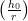

For problems 1 - 5: Show your calculations to receive partial credit. Show your results to three significant digits.
1. Given the unit weight (wc) of a sample of concrete is 120 pcf (lb∕ft3) and its strength (f′ c) is 3,000 psi. What is the expected Modulus of Elasticity using Ec = wc1.533 ?
2. If the concrete in problem 1 had a unit weight of 145 pcf what would its Modulus of Elasticity be?
3. Given a sample of normal weight concrete with a strength of 4,000 psi. What would the modulus of Elasticity
be using Ec = 57, 000 ?
?
4. If you needed to have normal weight concrete with a Modulus of Elasticity of 3.00 × 106psi what strength (f′ c) would you need? (Not what you would ask for.)
| 57, 000 = Ec | f′c = 2 | Rounding to the next 100 psi... |
| f′c = 2 | f′ c = 2, 770psi | f′c = 2, 800psi |
5. If instead of normal weight concrete you wanted to use a light weight concrete (wc = 115pcf) but you still wanted to have a Modulus of Elasticity of 3.00 × 106psi what strength (f′ c) would you need? (Not what you would ask for.)
| wc1.533 = Ec | f′c = 2 | Rounding to the next 100 psi... |
| f′c = | f′ c = 5, 434psi | f′c = 5, 500psi |
For problems 6 - 7: Given: A company you are working for has decided to put up a Christmas tree for the kids this year and its your job to help the children build the decorations. Since it is a construction company the tree is going to be made from A706 rebar (the only kind to weld) and the decorations are going to be 4” diameter balls of concrete. A special mix of light weight concrete which has a slump of practically 12” will be used to fill the clear 96 plastic molds. To make the filling controllable a coworker brought in an old aquarium pump to fill the balls with. The pump can supply the mixed concrete at a rate of 34.9 (7.48052 gal = 1 ft3).
6. How long will it take for a single ball to be filled?
| V ol = | Rate = 34.9 × | t = 14.964s |
| V ol = π(2”)3 = 33.51in3 | Rate = 2.239 | with 3 significant digits |
| Rate = ∴ t = | t = | t = 15.0s |
7. What is the instantaneous (not average) rate of filling of a mold (change in height of the concrete) when it has 3” for concrete in it? (FYI average rate would be found by )
| h0 = h − r = 3” − 2” = 1” | Areacir = πrcir2 |
| θ = sin −1 = sin −1 = 30∘ | Area cir = π(1.732”)2 |
| rcir = r cos(θ) = 2” cos(30∘) | Area cir = 9.425in2 |
| rcir ≈ 1.732” | = |
 = 0.238
= 0.238
For problems 8 - 10: A concrete supplier that you have been using has had to switch to using aggregate from a different source, and developed a new mix design. Since the switch was very recent your supplier has only been able to conduct 20 strength tests so far. They provide you with the standard deviation of the 20 samples (S20 = 740psi). The project you are currently working on requires you to provide concrete with f′c of 3,000 psi and 5,300 psi. (Relevant lecture slide for reference.)
8. What is the value of concrete strength (f′cr) you are required to order to get f′c = 3, 000psi while limiting the chance of having a batch that is too weak?
| S = S20 × 1.08 = 740psi × 1.08 |
f′cr = max | f′cr = 4, 362psi |
| S = 799.2psi | Use: f′cr = 4, 400psi |
9. What would the value be for f′cr for when f′c = 5, 300psi?
| S = S20 × 1.08 = 740psi × 1.08 |
f′cr = max | f′cr = 6, 632psi |
| S = 799.2psi | Use: f′cr = 6, 700psi |
10. If with further testing of 5 more samples (25 total) the standard deviation drops to S25 = 400psi what would the new value of f′cr be for when you need f′c = 3, 000psi?
| S = S25 × 1.03 = 400psi × 1.08 |
f′cr = max | f′cr = 3, 460psi |
| S = 412psi | Use: f′cr = 3, 500psi |